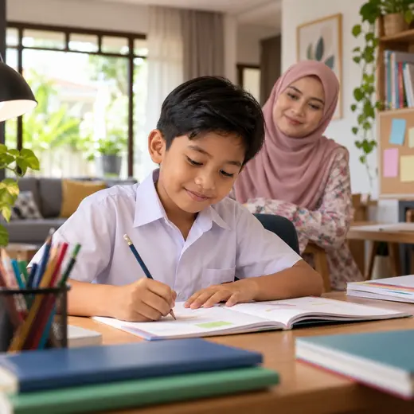
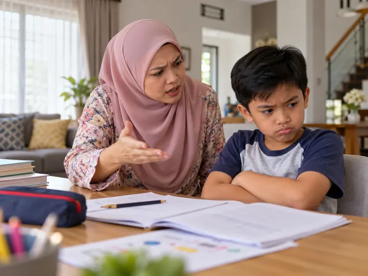
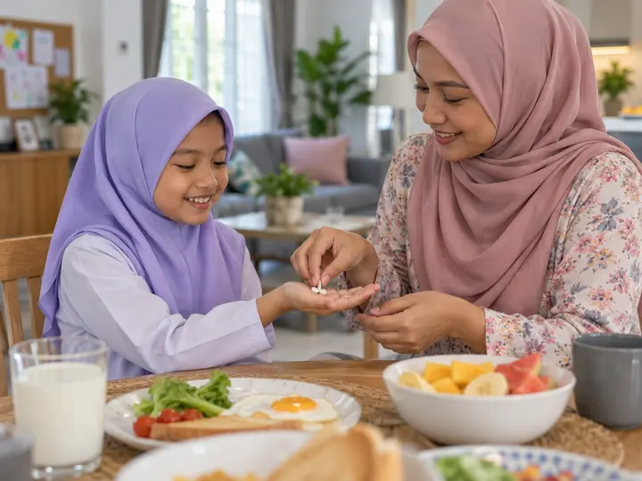
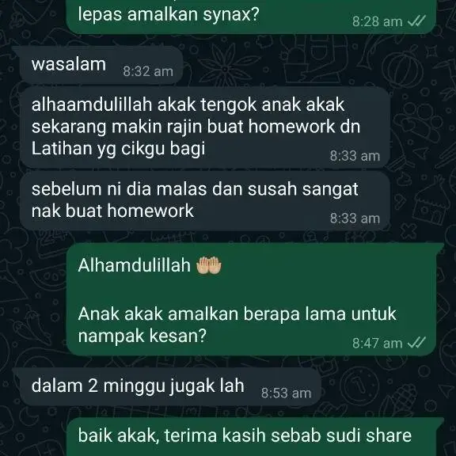
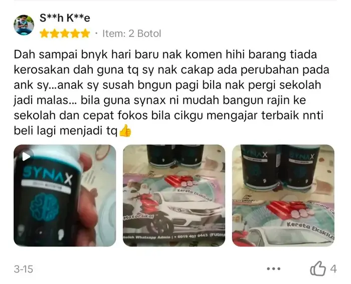
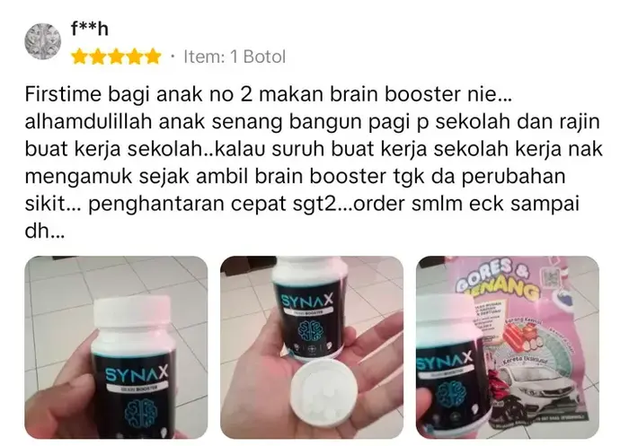
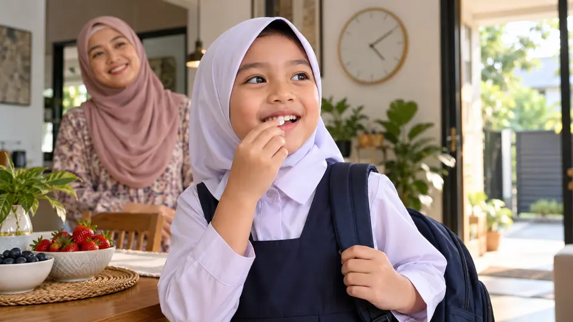
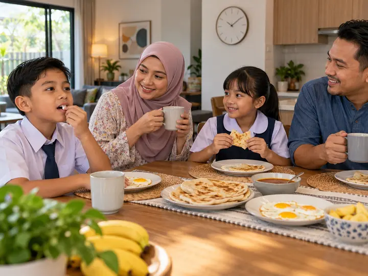
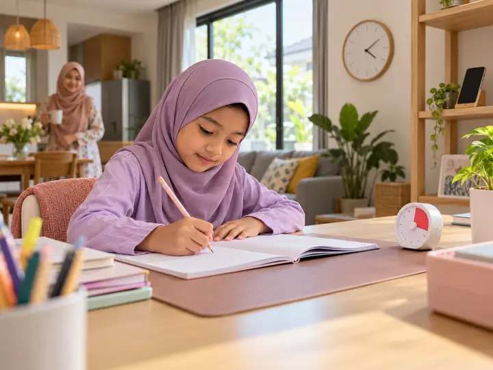

Khas untuk mak ayah yang anaknya…
Anak Fokus Lebih Lama Masa Belajar & Siapkan Homework Sendiri
SYNAX, tablet kunyah dengan 3 mineral fosfat (Kalium, Kalsium & Magnesium) untuk sokong fungsi normal sistem saraf anak 7–12 tahun. Rasa manis buah, 2 biji sehari, siap.

 🍓 Rasa manis buah
⚡ 3 Mineral Fosfat
🍓 Rasa manis buah
⚡ 3 Mineral Fosfat
“Anak saya susah bangun pagi nak pergi sekolah, jadi malas. Bila guna SYNAX, mudah bangun, rajin ke sekolah dan cepat fokus bila cikgu mengajar.”S**h K**e · beli 2 botol · ★★★★★
Saya Nak Cuba SYNAX → Mula RM20 sebotol · COD tersedia · Pemulangan 30 hariCuba semak anak sendiri…
Situasi Ni Selalu Jadi Kat Rumah?
Tekan mana-mana yang anda selalu nampak pada anak. Jujur je, takde siapa tengok. 😊
Ini bukan bermaksud anak tak pandai. Kadang-kadang anak memang dah cuba belajar, cuma nak kekalkan perhatian & rutin tu yang mencabar.
Ini yang ramai mak ayah tak sedar…
Setiap Fikiran Anak Bermula Dengan Isyarat Saraf
Bila anak baca, kira, atau dengar cikgu, otaknya hantar isyarat elektrik laju antara sel-sel saraf. Proses ini bergantung pada beberapa mineral asas.
Kalium bantu isyarat saraf bergerak merentasi sel. Bila kurang cekap, anak nampak lambat respon & cepat penat bila kena fokus lama.
Kalsium terlibat di synapse, tempat maklumat berpindah antara sel saraf. Ini asas kepada proses mengingat & memahami.
Magnesium jadi “brek” semula jadi supaya saraf tak terlalu bertindak balas. Bila kurang, anak lebih resah & susah nak tenang.
Bila rutin fokus anak terganggu, kesannya terasa pada…
Prestasi kelas & UASA
Anak faham masa cikgu ajar, tapi tak dapat kekalkan sampai waktu ujian.
Suasana rumah
Setiap malam jadi “perang homework”. Mak ayah penat, anak pun tertekan.
Keyakinan diri
Anak mula rasa “aku memang tak pandai” bila selalu ketinggalan dalam kelas.
Tabiat gajet
Bila belajar rasa susah, anak cari hiburan yang lebih mudah: skrin.
Kos tuisyen
Tuisyen tambah, tapi kalau anak sukar fokus, hasilnya tetap terhad.
Masa terbaik untuk bina rutin yang betul ialah SEKARANG, masa anak masih di sekolah rendah.
Ramai mak ayah dah cuba macam-macam. Bagus!
Tapi Bandingkan Dua Cara Ni…

Cara Biasa
Penat, mahal, anak makin melawan…
- ✕Marah & paksa duduk belajar, anak makin tertekan
- ✕Tambah tuisyen RM150–RM300 sebulan
- ✕Tarik gajet, anak merajuk seharian
- ✕Beli suplemen sirap yang susah anak nak minum
- ✕Tiada rutin pemakanan yang konsisten
Akhirnya, mak ayah yang give up…
Rutin + SYNAX
Kunyah 2 biji, teruskan hari anak!
- ✓3 mineral fosfat dalam satu tablet kunyah
- ✓Rasa manis buah, anak ambil sendiri tanpa dipaksa
- ✓Hanya ±RM1.22 sehari dengan pakej 6 botol
- ✓Sukatan sama setiap biji, senang konsisten
- ✓Tiada pewarna & pemanis tiruan
✦ Memperkenalkan…
SYNAX Chewable Tablet
Suplemen tablet kunyah dengan gabungan Kalsium Fosfat, Kalium Fosfat & Magnesium Fosfat untuk dijadikan sebahagian rutin harian anak.
APA YANG ADA
- • Kalium Fosfat
- • Kalsium Fosfat
- • Magnesium Fosfat
- • Bahan semula jadi
APA ANAK RASA
- • Manis buah, macam gula-gula
- • Kunyah, tak perlu telan pil
- • Senang bawa ke sekolah
🎁 Apa yang anda dapat:
- SYNAX tablet kunyah (30 biji sebotol)
- Arahan pengambilan ikut umur pada label
- Khidmat pelanggan WhatsApp terus
- Pilihan COD & COD Time Gaji
- Pemulangan percuma dalam 30 hari
Bukan campuran sembarangan
3 Mineral, 3 Peranan Untuk Saraf Anak
Tekan setiap mineral untuk tengok peranannya.

Isyarat saraf bergerak melalui pertukaran ion kalium-natrium merentasi membran sel saraf, asas kepada isyarat elektrik dalam otak.
Penghantaran isyarat kurang cekap. Anak nampak lambat bertindak balas, cepat penat bila kena fokus lama.
Isyarat saraf dihantar dengan lebih cekap dan stabil.

Kalsium mencetuskan pelepasan neurotransmitter di synapse, titik pertemuan antara sel saraf, asas kepada proses ingatan.
Penyampaian maklumat antara sel saraf kurang lancar. Proses mengingat dan memahami jadi lebih mencabar.
Synapse berfungsi dengan lebih baik, menyokong proses pembelajaran dan ingatan.

Magnesium bantu kawal keterujaan saraf, macam “brek” semula jadi supaya sistem saraf tak terlalu bertindak balas.
Saraf lebih mudah “over-reactive”. Anak nampak resah, susah nak tenang untuk fokus.
Sistem saraf lebih stabil, membantu anak kekal tenang dan fokus.
Penerangan berdasarkan peranan umum mineral dalam badan manusia. SYNAX ialah suplemen, bukan ubat, dan tidak bertujuan mendiagnosis, merawat atau menyembuhkan sebarang keadaan.
Setiap anak berbeza, tapi ini yang ramai mak ayah kongsi
Perubahan Kecil Yang Mak Ayah Mula Perasan Bila Konsisten

MINGGU 01Suka 🍓
Anak suka rasanya, minta sendiri lepas sarapan. Rutin 2 biji sehari mula terbentuk.
Bangun 🌅
Ramai mak ayah kongsi anak lebih mudah bangun pagi, kurang merengek nak ke sekolah.
Duduk 📚
Lebih lama duduk depan buku. Homework siap lebih awal, kurang “perang” waktu malam.
Yakin ⭐
Rutin dah jadi tabiat. Anak lebih bersemangat, berani jawab bila cikgu tanya.
Bayangkan dalam beberapa minggu, anak anda:
- ✨ Bangun pagi sendiri, siap ke sekolah tanpa drama.
- ✨ Balik sekolah, terus buka buku tanpa disuruh 3 kali.
- ✨ Ingat sifir & ejaan yang dipelajari semalam.
- ✨ Malam lebih tenang, mak ayah pun boleh rehat.
Ini bukan janji ajaib. Ia hasil rutin harian yang konsisten bersama tidur cukup, makan seimbang & masa belajar yang baik. Pengalaman setiap anak berbeza.
Kisah sebenar mak ayah
Apa Kata Mak Ayah Yang Dah Amalkan?
Lebih 40,000 testimoni. Ini antaranya.
📸 Tangkap layar sebenar dari pelanggan (tekan untuk besarkan)

“Makin rajin buat homework & latihan cikgu bagi”

“Mudah bangun pagi, rajin ke sekolah”

“Rajin buat kerja sekolah”

“Makin cergas, tak mudah lesu dalam kelas”

“Kurang tantrum, minat pergi sekolah”
*Pengalaman setiap pelanggan berbeza dan bukan jaminan hasil yang sama. Tekan & tahan baris testimoni untuk berhenti.
Tutup mata. Bayangkan ini.
Tak Perlu Paksa Anak Telan Pil Pahit Setiap Pagi
Anak buka botol sendiri, ambil 2 biji, kunyah. Siap. Tiada sudu, tiada sirap melekit, tiada drama.

Gigitan pertama
Manis buah yang lembut. Anak ingat ini gula-gula.
Kunyah
Hancur dengan mudah, tak berpasir, tak rasa “ubat”.
Habis, terus ke sekolah
Rutin 10 saat yang anak sendiri tak lupa.
Satu hari anak sekolah rendah
Di Mana SYNAX Masuk Dalam Rutin Anak?
Tekan setiap waktu. Ada tip praktikal sekali untuk mak ayah.

🌅 Lepas sarapan
Kunyah 2 biji SYNAX selepas sarapan. Letak botol sebelah bekas air atau beg sekolah supaya anak tak lupa.
🏫 Waktu kelas
Masa inilah anak perlu dengar, salin & faham. Mak ayah ramai kongsi anak lebih fokus dan kurang mengantuk dalam kelas bila rutin konsisten.

📚 Masa homework
Pecahkan homework kepada sesi 20 minit dengan rehat 5 minit. Anak 7–12 tahun lebih mudah fokus dalam sesi pendek.
🌙 Sebelum tidur
Tidur 9–11 jam penting untuk anak sekolah rendah. Inilah masa otak menyusun apa yang dipelajari siang tadi.
Cara yang betul adalah kunci
Berapa Biji Sehari?
Ikut umur anak. Rujuk juga arahan pada label produk.
☀️ Bila nak ambil?
2 biji · selepas sarapan
Kunyah sampai hancur. Boleh minum air kosong selepas itu.
📦 Satu botol tahan berapa lama?
30 biji ÷ 2 biji = ±15 hari
Pakej 6 botol cukup untuk ±90 hari, sesuai untuk satu penggal persekolahan.
Supaya anda beli dengan tenang
SYNAX Untuk Siapa?
✅ Sesuai jika…
- Anak 7–12 tahun yang cepat hilang fokus masa belajar
- Mak ayah nak tambah sokongan nutrisi dalam rutin harian anak
- Anak susah telan pil atau tak suka sirap
- Sanggup amalkan konsisten sekurang-kurangnya 30 hari
❌ BUKAN untuk anda jika…
- Nak gantikan rawatan doktor atau terapi anak
- Harap keajaiban dalam 1–2 hari
- Tak sanggup bagi secara konsisten
- Anak ada alahan pada mana-mana bahan (semak label)

🏛️ Surat Pengelasan Produk KKM
SYNAX diklasifikasikan sebagai produk makanan (tablet kunyah), bukan ubat. Sebab itu ia tidak memerlukan pendaftaran NPRA. Tekan untuk lihat surat.
Jika mahu mencuba rutin ini secara konsisten…
Pilih Tempoh Rutin Yang Sesuai
Pilih pakej berdasarkan tempoh penggunaan yang sesuai.
Nak cuba dahulu tanpa komitmen pakej besar? Mulakan dengan 1 botol.
Langkah terakhir
Lengkapkan Tempahan Anda
Isi maklumat di bawah dan buat pesanan terus. Tak perlu buat akaun.
Pesanan Diterima
Terima kasih. Pesanan anda sudah masuk dalam sistem kami dan kami akan hubungi anda untuk pengesahan.
No. Rujukan:
💬 Sahkan Pesanan via WhatsApp011-5308 7474Barang Sampai, Baru Bayar (COD)
Pilih “COD” semasa isi borang. Bayar tunai terus kepada rider bila SYNAX sampai depan pintu. Hujung bulan? Pilih COD Time Gaji, kami hantar dekat tarikh gaji anda.
Order Secara CODPemulangan Percuma Dalam 30 Hari
Kami nak mak ayah beli dengan hati yang tenang. Hubungi kami jika:
Botol / tablet rosak
Produk sampai dalam keadaan tak elok semasa penghantaran.
Produk tidak seperti dipaparkan
Yang sampai berbeza dengan SYNAX di halaman ini.
Ada apa-apa masalah
WhatsApp kami. 96% mesej dibalas dalam 24 jam.
FAQ
Soalan Lazim Mak Ayah
SYNAX ada arahan pengambilan ikut umur: 1–5 tahun 1 biji sehari, 6–12 tahun 2 biji sehari, 13 tahun ke atas 4 biji sehari (2 pagi + 2 malam). Sila ikut arahan pada label produk.
Satu botol ada 30 biji. Pada kadar 2 biji sehari, satu botol tahan ±15 hari. Pakej 6 botol cukup untuk ±90 hari, dan 8+2 botol untuk ±150 hari.
Antara kandungannya ialah Kalsium Fosfat, Kalium Fosfat dan Magnesium Fosfat, dibuat daripada bahan semula jadi tanpa pewarna atau pemanis tiruan. Rujuk label untuk senarai ramuan lengkap.
SYNAX ialah tablet kunyah berperisa manis buah. Ramai mak ayah kongsi anak ambil sendiri macam gula-gula. Mula dengan 1 botol RM20 kalau nak tengok anak suka atau tak.
SYNAX diklasifikasikan oleh KKM sebagai produk makanan (tablet kunyah), bukan ubat. Produk makanan tidak memerlukan pendaftaran NPRA. Surat pengelasan boleh dilihat di halaman ini.
Tak. Boleh mula dengan 1 botol RM20. Pakej 6 botol (±90 hari) dan 8+2 botol (±150 hari) disediakan untuk mak ayah yang nak bekalan lebih lama.
Tidak. Setiap anak berbeza. SYNAX ialah suplemen dan tidak menjamin sebarang keputusan pembelajaran atau perubahan tertentu. Ia paling baik diamalkan bersama tidur cukup, makan seimbang dan rutin belajar yang baik.
Dihantar dari Terengganu ke seluruh Malaysia, biasanya tiba dalam 2–3 hari bekerja. Caj pos RM7 (Semenanjung) atau RM10 (Sabah, Sarawak & Labuan), dikira automatik ikut poskod. COD, COD Time Gaji & bayaran online (Billplz) tersedia.
Ada soalan lain? WhatsApp kami, kami balas secepat mungkin.
💬 WhatsApp KamiP.S. Risau anak tak suka? Mula dengan 1 botol RM20. Kalau ada masalah dengan produk, anda dilindungi pemulangan percuma dalam 30 hari.
P.P.S. Rutin perlukan masa untuk jadi tabiat. Sebab itu ramai pilih pakej 6 botol (RM110), cukup ±90 hari untuk anak 7–12 tahun.
P.P.P.S. Terus jaga tidur, makan & masa skrin anak. Tambah satu rutin kecil: 2 biji SYNAX selepas sarapan. Bulan depan, biar anak sendiri yang tunjuk bezanya.
Pilih Pakej Anda Sekarang →